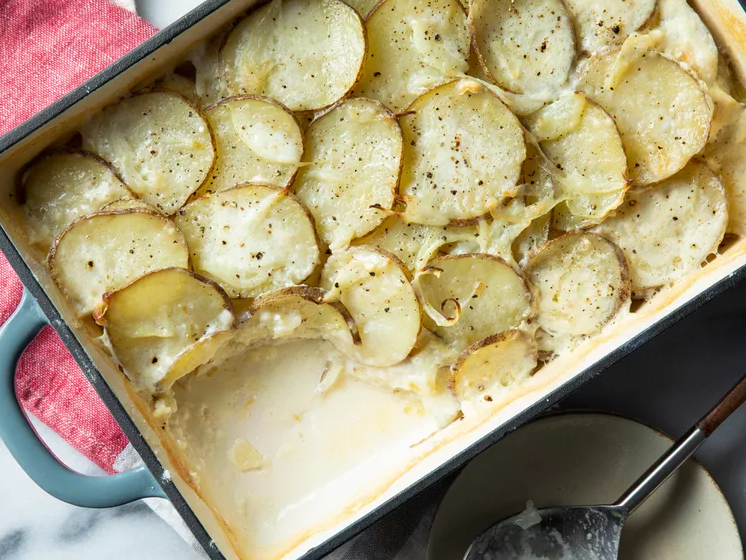

Scalloped Potatoes

Home
Description
The best scalloped potatoes are everything we love about comfort food in one rich, warm, bubbly, crusty, creamy casserole.
A must-have for holiday meals, scalloped potatoes make the perfect side dish for baked ham, roast beef, roast chicken,
pork chops, and more. This top-rated scalloped potatoes recipe is an Allrecipes favorite, earning hundreds of ratings and
reviews praising its simplicity and nostalgic appeal. Read on to learn how to make easy scalloped potatoes, with loads of
tips for recipe success.
Ingredients
- 3 pounds potatoes, thinly sliced
- ½ onion, thinly sliced
- 9 tablespoons all-purpose flour, divided
- 6 tablespoons butter, diced and divided
- salt and ground black pepper to taste
- 3 cups whole milk, or as needed
Steps
- Gather the ingredients. Preheat the oven to 375 degrees F (190 degrees C). Grease a 9x13-inch baking dish.
- Spread about 1/3 of the potato slices into the bottom of the prepared baking dish. Top with about 1/3 of the
onion slices. Sprinkle 3 tablespoons flour over the potato and onion. Arrange 2 tablespoons butter atop the flour.
Season the entire layer with salt and pepper. Repeat layering twice more.
- Heat milk in a saucepan until warm. Pour enough warm milk over the mixture in the baking dish so the top of the
liquid is level with the final layer of potatoes.
- Bake in the preheated oven until potatoes are tender and the creamy sauce is bubbling with a golden brown crust
on top, 45 to 60 minutes. The cream sauce may bubble up over the sides of the baking dish; place a baking sheet
underneath to catch any drips. Serve hot and enjoy!